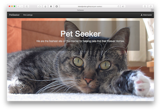
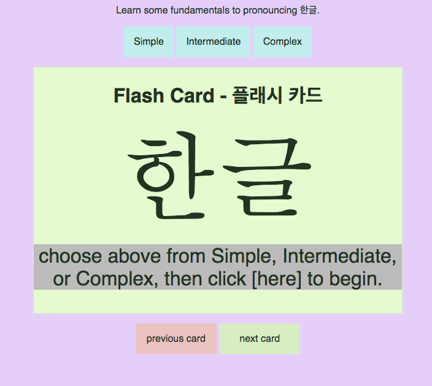

What I Do
Full-Stack Web Developer, Musician, and Marine. As a steadfast leader, I strive to motivate my teams with inventive ways to solve problems. My music and military experiences taught me the value of being a good team member and a respected manager, helping organizations to achieve their goals.
Code Gallery
- 
Pet Seeker, AngularJS front with Rails API
Inspired by trying to find information about stray animals, I built a Web app for viewing a database of animals for adoption. I wrote and seeded my own Rails API for viewing and editing through an AngularJS single-page app. This was my final project for my WDI course.
- Pet Seeker Live App
- Pet Seeker front end
- Pet Seeker API repo

Moto.V8, built in Ruby on Rails
This was my second class project, a Ruby On Rails single-page app with user authorization. Create an account with a username and password, and you can write and edit posts and comments, but you're prevented from editing other users' posts. It was also written before my CSS skills improved.
- Motov8 live app
- Motov8 on Github
- 
한글 Flash Cards, built in vanilla JavaScript
This was my first class project, a single-page app to be written in vanilla JavaScript. I took advantage of the UTF-8 standard to write Korean characters and create a basic set of flash cards showing the fundamentals of pronouncing Hangul, or 한글.
- 한글 Flash Cards App
- 한글 Flash Cards repo
About Leland
I was reaching the end of my military music career and looking for ideas for building a second career. I remembered that I was learning computer programming and physical science in high school, and I decided to take a look at modern computer coding.
I was pointed towards online tutorials to get a feel for code. It seemed easy, so I asked a friend, is it easier than I thought or am I just scratching the surface? She said, "It's both. It can be easy to start, but there is a lot to keep learning."
So, I took some weekend workshops at General Assembly here in Washington, DC, in basic Web programming and iOS app development. Impressed by my progress and by the community at General Assembly, and with the encouragement of my family and friends, I took the Web Development Immersive course in the spring of 2016. What you'll find on my page here is just the beginning of what I've been learning about code.
Recent Career and Education
- Developer, Hybrid Data Security, FBI
- Developer and Application Engineer, NOVA Corporation, DISA
- Web Developer, General Assembly
- SSgt, US Marine Corps
- BA Music Performance